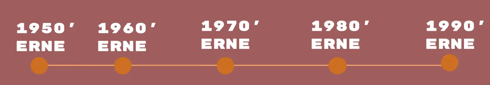
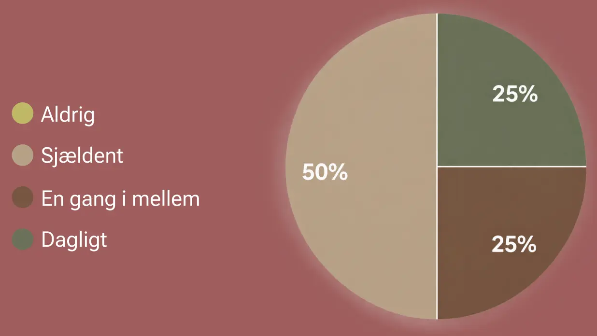

Hans Philip
Bette
Kesi
Pil
Vidste du at poppen allerede begyndte at blomstre frem i 50'erne? Pop-musikken blev nemlig til langt før end man lige tror. Læs mere her

Så tit lytter danskerne til dansk pop:
